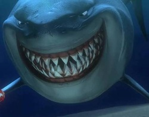

Renato Moreira
Heard en MacDonaldeilanden
911
pindakaas@gmail.com

Mijn eerste hobby is gamen
Je kan allerlij games kopen via steam om ze vervolgens te spelen. Ik ben meer interesseert in shooters.
SteamMijn tweede hobby is gym
Je kan daar allemaal verschillende oefeningen doen voor je spieren aan verschillende lichaamsdelen. Ik volg een routine van 3 dagen. Eerste dag is armen en shouders. Tweede dag is chest en rug en ten slotte is het legs.
Basic-fitMijn derde hobby is Anime bekijken
Ik kijk anime meestal in de nacht omdat het gezellig is. Mijn favoriete genre is action.
AnimeMijn favoriete film is The Maze Runner